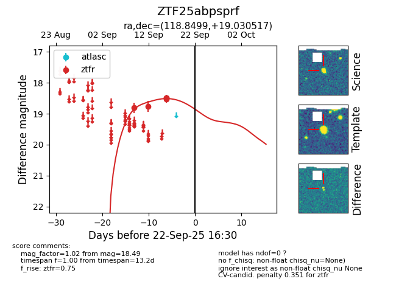
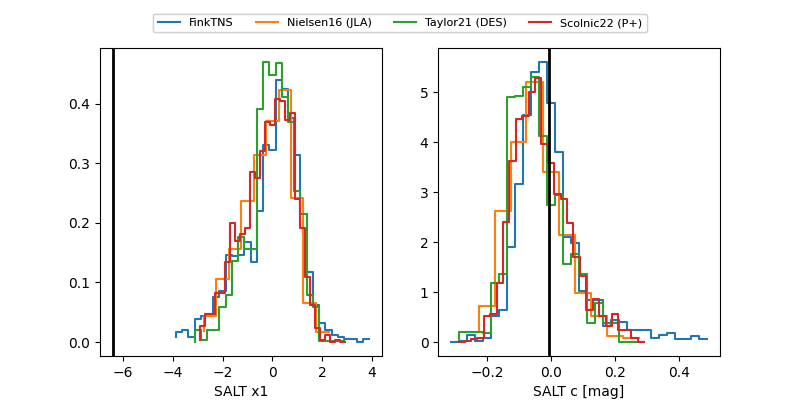

FINK: ZTF25abpsprf
Lasair: ZTF25abpsprf
ALeRCE: ZTF25abpsprf
ZTF25abpsprf (ztf,fink)
equatorial (ra, dec) = (118.8499,+19.03052)
galactic (l, b) = (202.2478,+22.36186)


last ztfr=18.49
5 ztfr detections